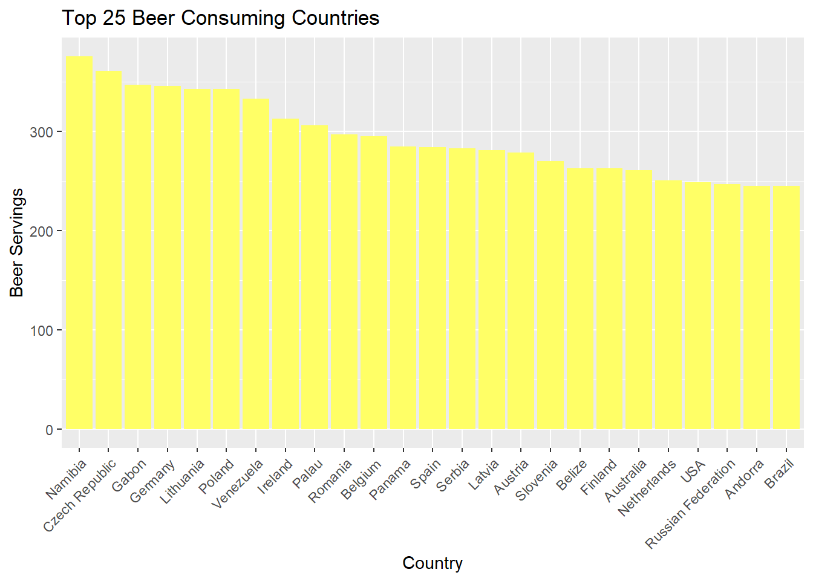

library(purrr)
library(lubridate) #to handle dates
library(dplyr)
library(patchwork)
library(fivethirtyeight)
data(drinks)
beer_plot <- drinks %>%
arrange(desc(beer_servings)) %>%
select(country, beer_servings) %>%
head(25)
#Make the plot
ggplot(beer_plot,aes(x=reorder(country,-beer_servings),y=beer_servings))+
labs(title = "Top 25 Beer Consuming Countries", x="Country", y = "Beer Servings")+
geom_bar(stat="identity", fill = "#FFFF66")+
theme(axis.text.x = element_text(angle = 45, hjust = 1))
It is interesting to see that Namibia drinks the most beer!